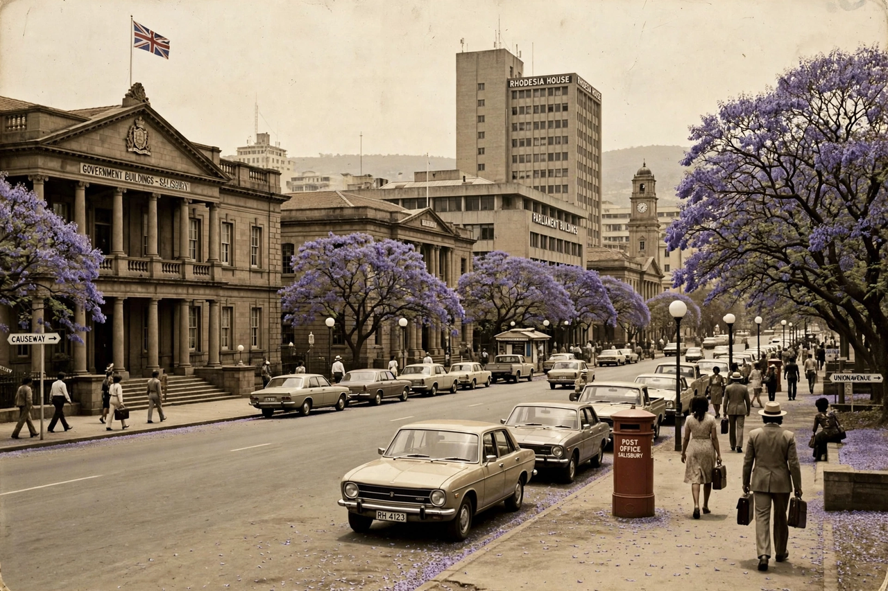

| Central Intelligence Organisation | |
|---|---|
| Formed | 1963 |
| Dissolved | 1980 (replaced by Zimbabwe's CIO) |
| Country | Rhodesia |
| Director-General | Ken Flower (1963–1981) |
| Headquarters | Salisbury (now Harare) |

The Central Intelligence Organisation (CIO) was the national intelligence agency of Rhodesia, formed in 1963 when the Federation of Rhodesia and Nyasaland broke up. It succeeded the Federal Intelligence and Security Bureau and was modelled in part on British practice. Its only Director-General during the Rhodesian period was Ken Flower, who ran the organisation from its creation until 1981, continuing briefly into the independence government of Zimbabwe.
The CIO was responsible for internal and external intelligence gathering, liaison with foreign services, and advising the prime minister, Ian Smith, directly. It maintained close links with South Africa's Bureau of State Security (BOSS), Portuguese intelligence before 1974, and (informally) Western services. During the Rhodesian Bush War, CIO intelligence supported the security forces fighting ZANLA and ZIPRA guerrillas, and the organisation was involved in covert operations, propaganda and liaison with the Selous Scouts. Ken Flower later claimed the CIO had warned Smith that the war was unwinnable militarily.
Following the Lancaster House Agreement and Zimbabwean independence in 1980, the organisation was retained wholesale as the intelligence service of the new state under Prime Minister Robert Mugabe, with Flower serving until 1981. It kept the same name, Central Intelligence Organisation, and became an influential and feared arm of the Zimbabwean government.